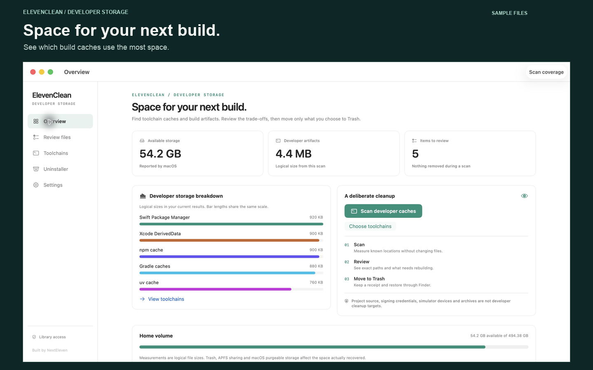

Developer storage, under your control
Space for your next build.
Developer tools leave more behind than source code. ElevenClean brings build artifacts and package caches into a deliberate scan, review and Trash workflow.
View on the App StoreRead the guideA preview of the redesigned 1.2.0 update, currently in preparation. The available App Store version may show the previous interface.

Built around developer storage
Review known caches for Xcode, Swift Package Manager, JavaScript and Python package managers, Gradle, Cargo, Go and supported editors. See sizes and rebuilding trade-offs before making a choice.
Your choices stay visible
Inspect exact paths, protect important folders, and use Scan coverage to understand root access and exclusions. Every removal has a final selection preview. Changed or unavailable items are kept.
A receipt, not a magic promise
See moved, skipped and failed outcomes. Compare macOS-reported available storage before and after a cleanup without confusing logical bytes moved with physical space recovered. Files move to recoverable Trash; ElevenClean does not empty it.
Local by design
No account, ads or remote file processing. The app works within the access you grant through macOS. Read the privacy policy.